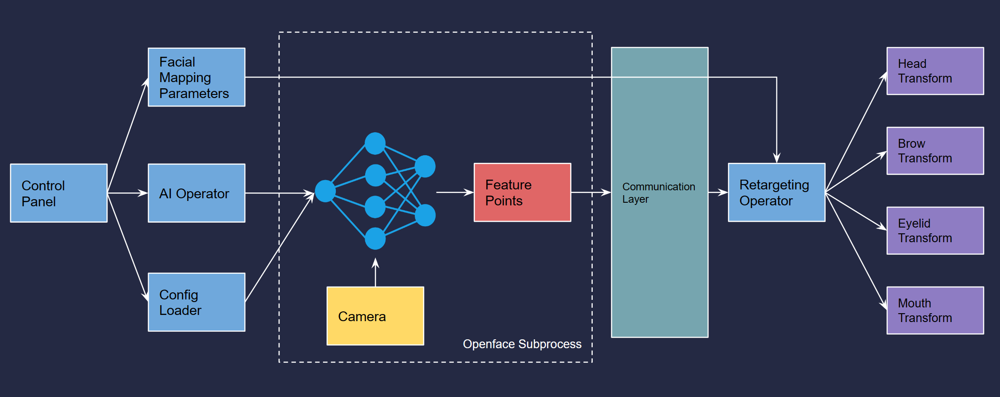
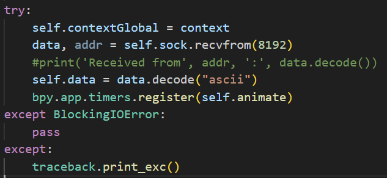
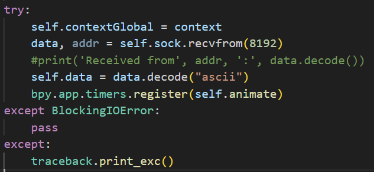

Machine Learning Based Facial Motion Capture
Introduction & Motivation
In this project, I developed a Blender Add-on that enables users to animate facial expressions
for characters.
With this Add-on, users can create the character's facial animation by connecting a
rigged model to it and utilizing their laptop's camera to capture their own facial
movements and expressions with our Add-on's built-in neural network.
The Add-on will retarget the user's facial expressions to the character in real-time
using our retargeting algorithm. I created various features including head movement,
eyelid movement, brow movement, jaw and lip movements… Additionally, I have included
various parameters that users can customize to tailor the Add-on's functionality to
their liking.
(Btw I am the actor for all the motion captures here lol)
There are three main reasons for me to create this project:

Artificial Intelligence's Influence on Art and Technical Artists
AI's role in art, particularly in animation, is growing rapidly. Advanced AI models like DALLE, MidJourney, GPT-3, and Stable Diffusion are creating realistic images and animations. This shift promises to make animation production more efficient and cost-effective. My project explores the intersection of AI and traditional animation, marking my first step in this research area.
Facial Animation's Significance in Gaming and Media
Facial animations are vital in games and films, making characters more lifelike and emotionally relatable. Traditionally labor-intensive, new deep learning techniques and face landmark detection are simplifying the creation of realistic facial expressions. This evolution, exemplified by the rise of Virtual YouTubers like Hololive, has made animation more accessible and dynamic. I aim to deepen my knowledge and skills in facial animation by developing a tool for this purpose.
Technical Artist's Role in Art Pipeline and Tool Development
For technical artists, mastering art pipeline and tool creation is crucial. I'm focusing on learning Blender's technical aspects and its Python scripting API to create a Blender Add-on, enhancing my practical skills. Additionally, recognizing the lack of community-based facial animation tools for indie game developers, I aspire to lay the groundwork for an open-source facial animation tool, fostering collaboration and usage within the community.
Component Demo


Project Architecture
Implementation
Here I introduce the Implementation of the core features:Control Panel
Openface Subprocess
A subprocess is initiated to launch a C++ openface instance to extract facial feature points shown in graph below. Then the data is sent between processes back to Blender through sockets.
 

Retargeting
The feature points are finally retargeted to the prebuilt armature control nodes on the model. The feature points are first classified to represent different parts, then interpolated to the final movement.
To gain stability and stable transitions in live animation, I used the Sliding Window Average to pre-process the data.
Fin.